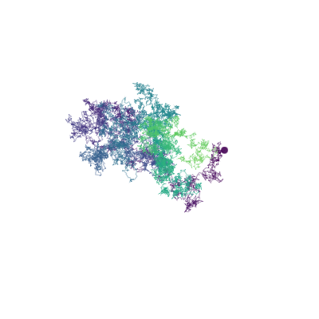
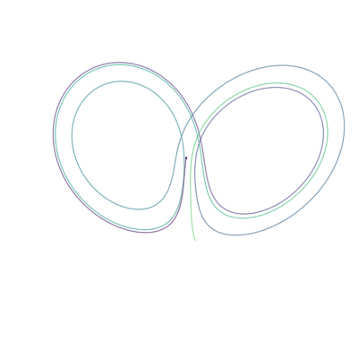
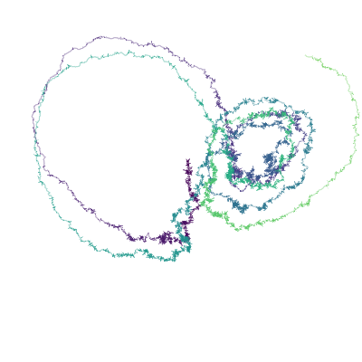
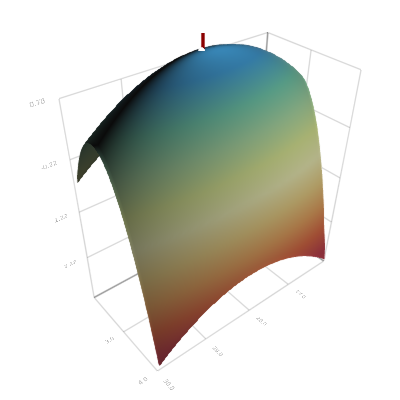
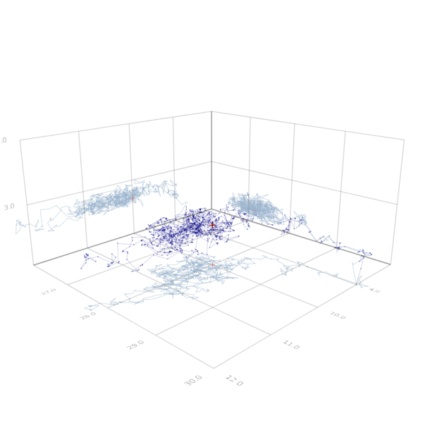

This IJulia script converted blog-post gives a tour for my package Bridge with focus on multivariate stochastic differential equations. I use Makie.jl for the visualisations.
Installation
To run this IJulia script install Bridge and checkout the master branch to run.
# Pkg.add("Bridge")
# Pkg.checkout("Bridge")The installation of Makie is a bit tricky and is detailed in the README.md file of Makie.
Setting the scene
The next few lines load the needed packages and some scripts.
using Bridge, StaticArrays, Makie, Bridge.Models, Colors, GeometryTypesinclude("../extra/makie.jl");Some definitions.
srand(5)
sphere = Sphere(Point3f0(0,0,0), 1.0f0)
circle = Sphere(Point2f0(0,0), 1.0f0)
perspective = @SArray Float32[0.433 0.901 -0.0 1.952; -0.237 0.114 0.965 -20.43; 0.869 -0.418 0.263 -90.271; 0.0 0.0 0.0 1.0];Time
Bridge mostly works with fix time grid methods. To get started, define a grid of time points tt say in the interval [0, 5] on which you want to simulate the process.
T = 5.00
n = 10001 # total length
dt = T/(n - 1)
tt = 0.0:dt:T
;Space
Bridge interacts nicely with StaticArrays. We use SVector{3,Float64} for points in 3d space.
In Bridge.Models the alias ℝ{3} == SVector{3,Float64} is defined. Because I often use MCMC methods and have to sample thousands of solutions, I try to make sure the functions are fast and have minimal overhead. Using SVectors helps alot.
ℝ{3}SVector{3,Float64}
3D Wiener process or Brownian motion
Bridge.jl is a statistical toolbox for diffusion processes and stochastic differential equations.
The simplest diffusion process is a Brownian motion. The distribution and concept of a Brownian motion is represented by the object Wiener{T}() where T is the value type. As long as randn(T) is defined, Wiener{T}() can be sampled.
Wiener{Float64}()
Wiener{Complex{Float64}}()Bridge.Wiener{Complex{Float64}}()
But now for 3d Brownian motion…
Wiener{ℝ{3}}()Bridge.Wiener{SVector{3,Float64}}()
Use sample to exactly sample a 3d Wiener process on at the time points tt.
W = sample(tt, Wiener{ℝ{3}}())Bridge.SamplePath{SVector{3,Float64}}([0.0, 0.0005, 0.001, 0.0015, 0.002, 0.0025, 0.003, 0.0035, 0.004, 0.0045 … 4.9955, 4.996, 4.9965, 4.997, 4.9975, 4.998, 4.9985, 4.999, 4.9995, 5.0], SVector{3,Float64}[[0.0, 0.0, 0.0], [0.0327429, 0.00583326, -0.00555515], [0.0581026, -0.0293756, -0.0256774], [0.045495, -0.0523616, -0.0271225], [0.0546075, -0.0207844, -0.0123186], [0.047648, -0.0185863, 0.0070987], [0.052417, -0.0398085, -0.0022569], [0.069798, -0.0385233, -0.0138994], [0.0959046, -0.0322122, 0.0603608], [0.0990595, -0.0609897, 0.0192606] … [-0.631677, -0.949839, -0.773298], [-0.640412, -0.972126, -0.75062], [-0.66116, -0.958156, -0.798044], [-0.698215, -0.926062, -0.784364], [-0.684498, -0.938696, -0.738218], [-0.714381, -0.926597, -0.75491], [-0.727137, -0.966003, -0.763791], [-0.77403, -0.978722, -0.755095], [-0.749953, -0.996518, -0.733079], [-0.754657, -1.0043, -0.721557]])
The function sample returns a SamplePath X.
SamplePath is the time series object of Bridge.jl, basically a struct with a vector of time points X.tt and a vector of locations X.yy.
The script extra/makie.jl defines a recipe for plotting SamplePaths with Makie.
# Figure 1: Brownian motion path
scene = Scene(resolution = (200, 200))
lines(W, linewidth = 0.5, color = viridis(n))
scatter([W.yy[1]], markersize = 0.09, marker = circle, color = viridis(1)) # starting point
center!(scene)
Figure 1. Brownian motion in 3d. Colors indicate progress of time.
Lorenz system of ordinary differential equations
Bridge.jl is mostly concerned with stochastic differential equations, but we can also solve ordinary differiential equations
$$
\frac{d}{dt} x(t) = F(t, x(t)).
$$
As a stochastic differential equation can be seen as ordinary differential equation with noise, let’s start with an ordinary one and add noise in a second step.
The Lorenz system is famous and nice looking 3d system of ordinary differential equations.
F(t, x, s = 10.0, ρ = 28.0, β = 8/3) = ℝ{3}(s*(x[2] - x[1]), x[1]*(ρ - x[3]) - x[2], x[1]*x[2] - β*x[3])
x0 = ℝ{3}(1.508870, -1.531271, 25.46091)
;Note that $F(t, x)$ returns a 3d vector, we have written the Lorenz system as vector valued differential equation.
$s$, $\rho$ and $\beta$ are parameters governing the system. With following parameters chosen by Lorenz the system shows chaotic behaviour:
s0 = 10
ρ0 = 28.0
β0 = 8/3
θ0 = ℝ{3}(s0, ρ0, β0)
;Compute a solution with
solve. The argument BS3() tells solve to use an order 3 Bogacki–Shampine method.
U, err = solve(BS3(), tt, x0, F)
round(err,5)0.00077
F2(t,x,_) = F(t,x)
solve!(BS3(), F2, U, x0, nothing)(Bridge.SamplePath{SVector{3,Float64}}([0.0, 0.0005, 0.001, 0.0015, 0.002, 0.0025, 0.003, 0.0035, 0.004, 0.0045 … 4.9955, 4.996, 4.9965, 4.997, 4.9975, 4.998, 4.9985, 4.999, 4.9995, 5.0], SVector{3,Float64}[[1.50887, -1.53127, 25.4609], [1.49371, -1.52859, 25.4258], [1.47865, -1.5259, 25.3908], [1.46367, -1.5232, 25.3559], [1.44878, -1.5205, 25.321], [1.43398, -1.5178, 25.2861], [1.41926, -1.5151, 25.2514], [1.40463, -1.51239, 25.2167], [1.39009, -1.50967, 25.182], [1.37563, -1.50696, 25.1474] … [0.50237, 0.918763, 9.50489], [0.504457, 0.922959, 9.49246], [0.506555, 0.927176, 9.48004], [0.508663, 0.931413, 9.46764], [0.510782, 0.935671, 9.45527], [0.512912, 0.93995, 9.44291], [0.515053, 0.94425, 9.43057], [0.517204, 0.94857, 9.41825], [0.519366, 0.952912, 9.40594], [0.52154, 0.957274, 9.39366]]), 0.000768832133378928)
# Figure 2: Solution of the Lorenz system
scene = Scene(resolution = (200, 200))
lines(U, linewidth = 0.8, color = viridis(n))
scatter([U.yy[1]], markersize=0.4, marker = circle, color = viridis(1))
center!(scene)
set_perspective!(scene, perspective)
Figure 2. A solution of the deterministic Lorenz system.
Stochastic Lorenz system
A corresponding stochastic differential equation has the following form $$ \frac{d}{dt} X(t) = F(t, X(t)) + \sigma(t,X(t)) W(t). $$ For the example, we choose $\sigma = 5I$.
σ = (t,x)->5I
X = solve(EulerMaruyama(), x0, W, (F, σ))
;As the driving Brownian motion path provides a set of time points W.tt, the argument tt is dropped. solve has also an in-place version solve!.
@time solve!(EulerMaruyama(), X, x0, W, (F, σ)); 0.000367 seconds (4 allocations: 160 bytes)
Note the solver is quite efficient.
# Figure 3: Sample path
scene = Scene(resolution = (200, 200))
lines(X, linewidth = 0.5, color = viridis(n))
scatter([X.yy[1]], markersize=0.09, marker = circle, color = viridis(1))
center!(scene)
set_perspective!(scene, perspective)
Figure 3. Sample of the solution of the stochastic Lorenz system.
Parameter inference for the stochastic Lorenz system
The likelihood for the parameter $\theta = (s, \rho, \beta)$ is given by Girsanov’s theorem.
The stochastic Lorenz system is defined in Bridge.Model and takes a parameter triple θ.
function loglikelihood(θ, θref, X)
P = Lorenz(θ, SDiagonal(5.0, 5.0, 5.0))
Pref = Lorenz(θref, SDiagonal(5.0, 5.0, 5.0)) # Reference measure
girsanov(X, P, Pref)
endloglikelihood (generic function with 1 method)
Choose a reference measure. We only estimate ρ and β.
θref = s0, Ρ[end÷2], Β[end÷2]
@show θref;θref = (10, 27.95, 2.98)
S = 9.0:0.05:11.0
Ρ = 26:0.05:30
Β = 2.0:0.02:4.0
llsurface = [loglikelihood((s0, ρ, β), θref, X) for ρ in Ρ, β in Β];# Figure 4: Likelihood surface
scene = Scene(resolution = (200, 200))
llsurfaces = (llsurface - mean(llsurface))/std(llsurface)
llsurfaces0 = llsurfaces[first(searchsorted(Ρ,ρ0)), first(searchsorted(Β,β0))]
surface(Ρ, Β, llsurfaces, colormap = :Spectral)
l = Point3f0(ρ0, β0, 0.0)
u = Point3f0(ρ0, β0, 1.2*llsurfaces0)
lines(Point3f0[l,(u+2l)/3, (2u+l)/3, u], linewidth=3.5, color=:darkred)
i,j = ind2sub(size(llsurfaces),indmax(llsurfaces))
scatter([Point3f0(Ρ[i],Β[j], maximum(llsurfaces))], markersize=0.1, marker = circle, color = :white)
axis(Ρ[1]:1.0:Ρ[end], Β[1]:1.0:Β[end], minimum(llsurfaces):1.0:maximum(llsurfaces))
center!(scene)
set_perspective!(scene, Float32[-0.7788 0.6272 -0.0 20.1757; -0.3824 -0.4748 0.7926 13.1915; 0.4972 0.6173 0.6097 -23.9617; 0.0 0.0 0.0 1.0])
Figure 4. (Log-) likelihood surface. A line marks the true parameter value, a circle the maximum likelihood estimate
Markov chain Monte Carlo
In my work I am interested in Bayesian methods for inference for stochastic differential equations. To compute the posterior distribution of the parameters on naturally employes Markov Chain Monte Carlo (MCMC) methods.
Julia is a very good match for MCMC computations: They are sequential and cannot be vectorized. In programming languages with slow loops this is a problem and probabilistic programming libraries are used. For Julia, those too exists, but we may also just stay with Julia.
# MCMC sampler
logπ(s, ρ, β) = 1.0
function mcmc(X, logπ, θstart, θref; iterations = 10000)
θ = θstart
Θ = [θ]
ll = -Inf
lπ = logπ(θ...)
for i in 1:iterations
θᵒ = θ + 0.1*randn(ℝ{3})
lπᵒ = logπ(θᵒ...)
llᵒ = loglikelihood(θᵒ, θref, X)
if rand() < exp(llᵒ - ll + lπᵒ - lπ)
θ, lπ, ll = θᵒ, lπᵒ, llᵒ
end
push!(Θ, θ)
end
Θ
end
# MCMC experiment
θref = S[end÷2], Ρ[end÷2], Β[end÷2]
@time Θ = mcmc(X, logπ, ℝ{3}(9.,30.,2.0), θref; iterations = 10000)
@show mean(Θ)
@show θ0
; 9.618450 seconds (120.96 k allocations: 4.632 MiB, 0.80% gc time)
mean(Θ) = [11.0041, 28.0243, 2.71512]
θ0 = [10.0, 28.0, 2.66667]
# Figure 5: Traceplot
scene = Scene(resolution = (300, 300))
Θs = [Point3f0(Θ[i]+0.01randn(ℝ{3})) for i in 1:1:1000] # subsample
scatter(Θs, markersize=0.02, marker = circle, color=RGBA(0.0, 0.0, 0.5, 0.3) )
lines(Θs, linewidth=0.5, color=RGBA(0.0, 0.0, 0.5, 0.3) )
#lines(Θ[end-10000:10:end], linewidth=0.2, color=:black)
for i in 1:3
p = ℝ{3}(ntuple(n->n!=i,3))
lines([Θs[i].*p .+ ℝ{3}(S[1],Ρ[1],Β[1]).*(1 .- p) for i in 1:length(Θs)],
linewidth=0.4, color=RGB(0.6,0.7,0.8) )
end
scatter([ℝ{3}(s0, ρ0, β0)], markersize=0.1, marker = '+', color = :darkred)
Ps = [ℝ{3}(ntuple(n->n!=i,3)) for i in 1:3]
scatter([ℝ{3}(s0, ρ0, β0).*p .+ ℝ{3}(S[1],Ρ[1],Β[1]).*(1 .- p) for p in Ps],
markersize=0.08, marker = '+', color = RGB(0.8,0.5,0.5))
axis(8.0:1.0:12.0, Ρ[1]:1.0:Ρ[end], Β[1]:1.0:Β[end])
center!(scene)
Figure 5. Samples of the MCMC chain for the posterior distribution (black) and true value (red). Projections on the $s$-$\rho$-plane, the $\rho$-$\beta$-plane and the $\beta$-$s$-plane in gray, gray-red.